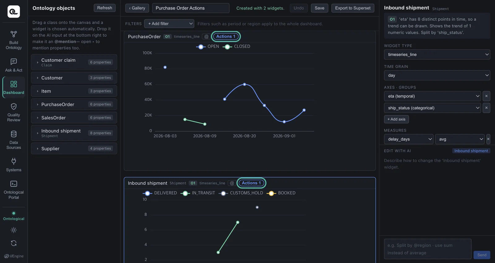
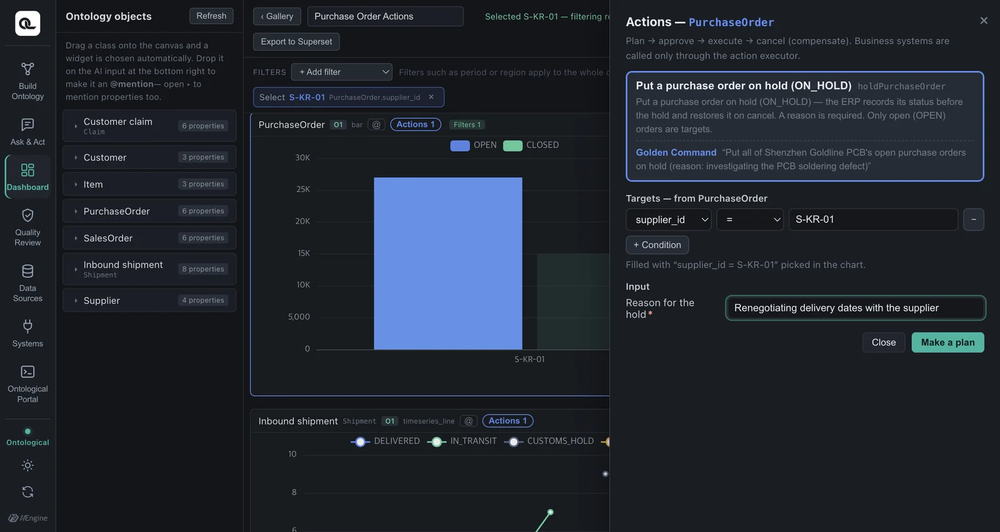
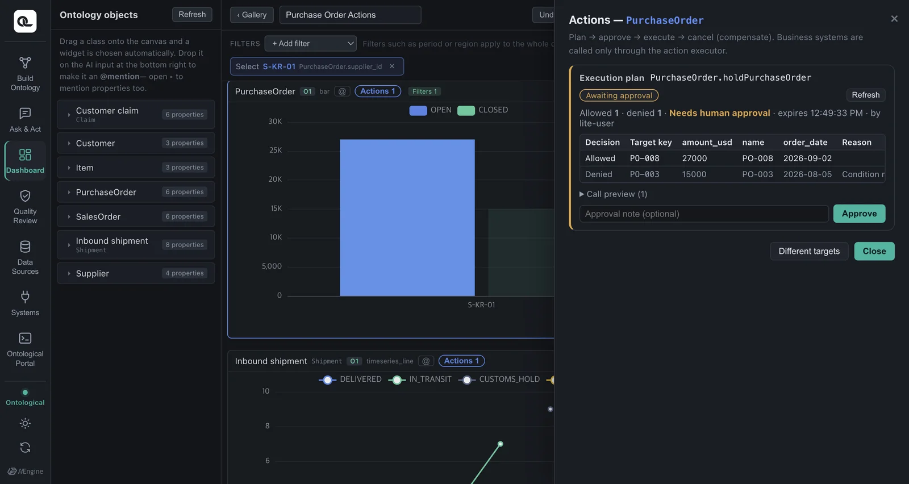
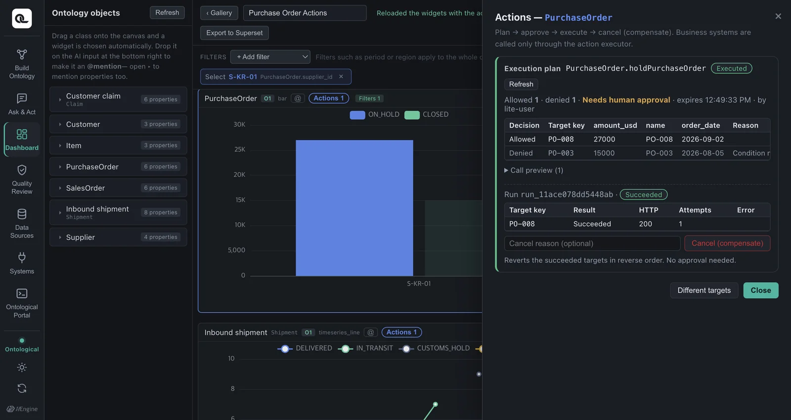
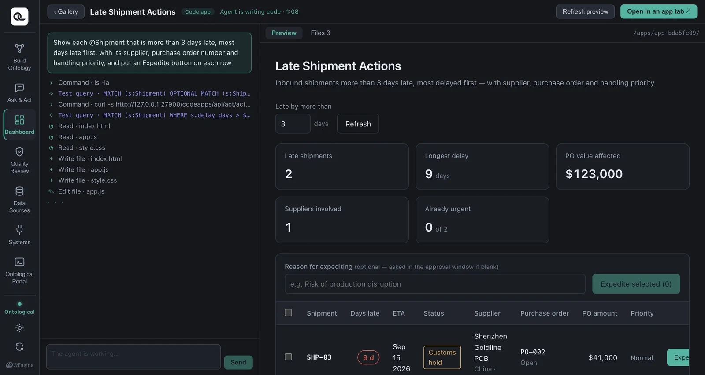
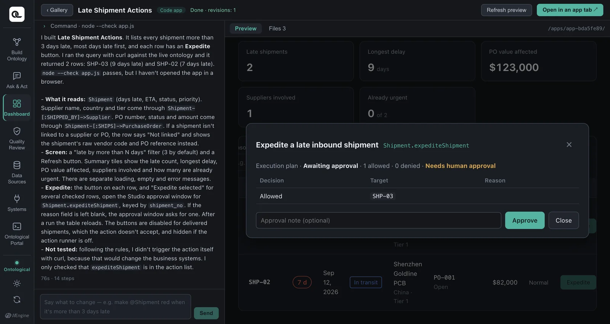
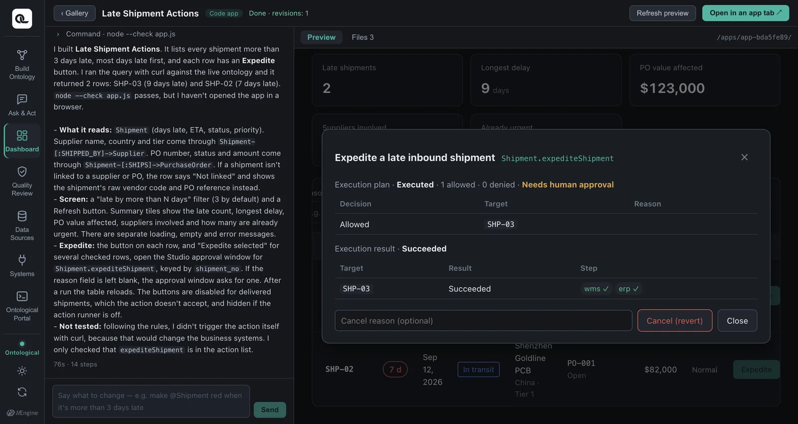
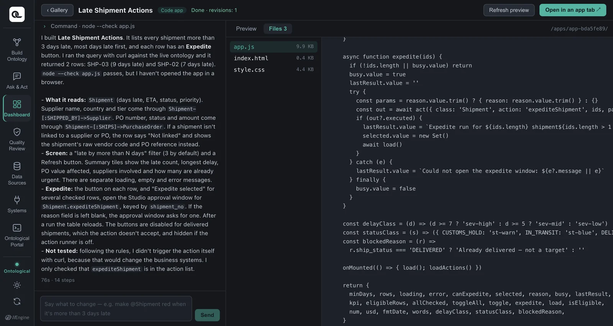

If your ontology has actions, dashboard widgets and code apps get buttons that run them. Running an action from a button goes through the same plan → approve → execute → cancel steps as in chat. Golden Questions decide what an app shows, and Golden Commands decide what an app can do.
New in 0.1.1
The features in this chapter (action buttons on widgets, and actions() and act() in the SDK) are available from Ontological Studio 0.1.1. If you are on 0.1.0, download the new version from the releases page. The screenshots come from the demo video (dark theme).
Why apps need buttons#
If you spot a late shipment on a dashboard, the next step is to “expedite that shipment”. Instead of switching to the Ask & Act tab and giving the command again, you should be able to do it right on the screen you are looking at. But an app must not call business systems however it likes. So buttons use the same path as the plan card in chat (the action executor).
| What stays protected | How |
|---|---|
| Apps never call business systems directly | Buttons call only the action executor's plan, approve and execute |
| Policy | Checked for each target, with denial reasons shown |
| Human approval | Approve, execute and cancel happen only when a person clicks in the dialog |
| Undo | Cancel (reverse compensation) in the same dialog |
Action buttons on dashboards#
If the class a widget shows has published actions, an Actions N button appears at the top of the widget. You only see the actions that the person using this screen has permission to use.

- Keep the purchase order widget as bars of amount by supplier, but split it into series by status (just ask the AI to “color the bars by status”. With the plain total bars from Chapter 17, the change from OPEN → ON_HOLD would not show in the bars). Click the bar for supplier
S-KR-01. This value becomes the dashboard's selection. - Click the Actions button, and a drawer opens on the right. It shows the Put purchase order on hold action together with the Golden Command that created it, and the target condition is already filled in with the supplier you just picked. Just enter a reason for the hold.
- Make a plan — the policy checks each target. PO-008, which is open, is allowed. PO-003, which is already closed, is denied by the “Open purchase orders only” policy.
- Approve → Execute — the ERP puts the purchase order on hold, and the bars next to the drawer are redrawn right away (OPEN → ON_HOLD).
- Cancel — the compensation (releasing the hold in the ERP) runs, and the bar goes back to OPEN.



Action buttons in code apps#
When you build a code app, the agent's prompt also includes the ontology's list of actions and Golden Commands. So the agent knows which buttons to add to which rows.
Show the @Shipment records that are more than 3 days late, longest delay first, and add an Expedite button to each row

Clicking a button opens a confirmation dialog shown by the SDK. It is the SDK's dialog, not one drawn by the app code, so it looks the same in every app and an app cannot fake it. Check the Golden Command, the targets and the reason, then plan → approve → execute.


When you close the dialog, the app reloads its data, and you can see that the shipment's priority is now “urgent”.
In code#
The button calls the SDK's act() function.
import { query, actions, act } from '/apps/_runtime/og.js'
// Draw the button only if this class has a usable action (empty array if the executor is off)
const canExpedite = (await actions('Shipment')).some(a => a.action === 'expediteShipment')
async function expedite(row) {
const out = await act({
class: 'Shipment',
action: 'expediteShipment',
ids: [row.shipment_no], // key values of the action's targets (you can pass several at once)
params: { reason: 'Risk of production disruption' }, // leave out required inputs you don't know; the dialog shows fields for them
})
if (out.executed) await load() // reload the data after an execute or cancel
}

act() argument |
Meaning |
|---|---|
class, action |
The action to run |
ids |
Array of target key values (e.g. shipment numbers) |
where |
Pick targets by condition instead of ids: [{prop: 'delay_days', op: '>', value: 3}] |
params |
Input values. If you leave out a required input, the dialog shows a field for it |
| Return value | When the dialog closes, { executed, cancelled, plan, run } |
The agent does not test the execution path
The coding agent tests queries itself, but it does not test plan, approve or execute — that would change the real business systems. It only checks the list of actions and adds the buttons. Approval requests are accepted only from the browser screen; calls from the agent's terminal are rejected.
Summary — how questions and commands become apps#
| What you wrote when building | What was created | In apps |
|---|---|---|
| Golden Question | Classes, relationships, properties | Dashboard widgets, code app queries |
| Golden Command | Actions (steps, compensation, policy) | Action buttons on widgets, act() buttons in code apps |
Exercises
- On the purchase order widget of your Supply Chain Overview dashboard, use the action button to put one supplier's open purchase orders on hold, then cancel.
- Build a code app with “a list of customers who filed a PCB soldering defect claim, with a Send remediation notice button on each row”. Which action does it use?
Show answers
Customer.notifyCustomer(Golden Command “Send a remediation notice to the customer who filed the PCB soldering defect claim”). It has two required inputs, a subject and a body, so if the app does not know them, the confirmation dialog shows fields for them. The compensation is withdrawing the notice in the CRM.